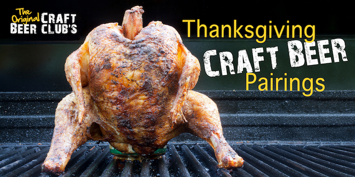

1 Jun 2022
Craft Beer Club's Thanksgiving Craft Beer Pairing Guide
Thanksgiving is a day for sharing. We share our day, our food, and our company. But it doesn’t have to stop there. You can also share a variety of Craft Beers. The thing about Thanksgiving is that it boasts a huge spread of foods and flavors, so a beer that goes well with cranberry sauce might not go as well with green beans, you know? So, if you want to have a whole, all-encompassing spread of Craft Beers for this Thanksgiving, to get maximum enjoyment out of both your meal and your beer, you’re going to have to plan accordingly.But, if planning isn’t one of your strong suits, we’re happy to help! Those of you who are lucky enough to receive our monthly Craft Beer Club shipments get to try a number of the brew styles mentioned below by simply opening your front door. With 4 different Brew Styles in each package you can easily try various styles with each Thanksgiving dish.Let’s take a look at these most common Thanksgiving foods and the Craft Beers that pair well with them.
Turkey - Traditional
Traditional, baked turkey, often with stuffing, is warm, moist, and buttery; a deserved staple to many Thanksgiving Dinners.To get the most out of your Turkey, pair it with a Brown or Golden Ale. Try to keep your Brown Ale on the softer side or it will overpower the turkey. What you’re looking for here is a nice, medium hoppy beer with just trace amounts of fruit. An American Golden Ale is also perfect because it picks up the Turkey’s flavor without changing it.
Turkey - Fried
A lot of folk out there are now frying their turkey and I, for one, think it’s great! But the flavors of the turkey are different once fried and you’ll need a stronger beer to complement it over a traditional bird.For a Fried Turkey look for those darker Brown Ales. Either go for a Nutty flavor or a Fruity Flavor depending on what you prefer. For me, there is nothing like a nice, nutty finish to go with the sharp flavors of a Fried Turkey.
Ham
Sometimes a mistake is made during Thanksgiving and, for some reason, Ham is served (thanks, Mom). But then you realize that you don’t often have a nice, honey glazed ham topped with brown sugar so you just go with it.For a ham you have a few options. You can pick it up with matching flavors, or you can pull your taste buds in completely different directions. For matching flavors go with a Hefeweizen where the soft, subtle spices carry the ham. For a complete contrast, go with a dark lager (our Bavarian Dark Lager was already mentioned as a good pairing with stuffing and mashed potatoes, don’t forget).
Side Dishes
Stuffing & Mashed Potatoes
Stuffing and Mashed Potatoes are garlicky and herbal, thick and rich.You can go two ways here for your beer of choice. Go for something that acts as a cleanse, or go for something that creates a contrast. Because it’s Thanksgiving and a little gluttony can be forgiven, let’s go with contrast. A nice, Malty dark beer will do wonders here. One sip from a Bavarian Dark Lager will make the garlic and herbs pop in your next bite.
Cranberry Sauce
You might not think much of Cranberry sauce, but you sure notice it when it’s missing. Cranberry sauce is one of the most unique aspects of a Thanksgiving Dinner, no one really thinks about it until it’s not there, so make sure someone is in charge of this dish!The tartness of Cranberries is a great big window for us to use a nice, sour beer. We don’t want to go fruity, as that will dilute what the sauce is already doing. But we can let the cranberries be more pronounced with a nice sour beer or a Saison.
Cheese
A cheese plate is one of the most expected and enjoyed appetizers at a Thanksgiving! It’s a little bit like Cranberry sauce in the sense that no one really cares about it until it’s missing.Cheeses have a large range of flavors, textures, and quality so recommending just one beer for them all is a little crazy. But, if you keep all your cheeses on the hard, aged side (which lets the rich, gooey desserts stand out more) then you just need one single beer to pair with it. Think Hops. Simple but unmistakable English IPAs will be your best bet, for sure.
Dessert
Dessert is the real reason anyone does anything and I believe there are numbers that back that up. But pairing a dessert to the right craft beer is a bit harder than we’d
like to admit. I’m going to break this up into three parts. Chocolate Desserts, Pumpkin Desserts, and Fruit Desserts.
For a Chocolate Dessert you want something that can hang with the chocolate. Plain chocolate needs a porter or stout.
Dark chocolate needs a darker ale such as a Scotch Ale. Chocolates with nuts needs a Brown Ale.
For Pumpkin Desserts you want to find something spicy. Spiced ales go great as does the more subtle spiced beers like Belgian Witbier or a Hefeweizen.
You’re in luck with Fruity Desserts because they actually pair great with the beers already mentioned for desserts. A dark lager lets the fruit play off of another flavor.
A spicy beer will act as a backdrop for the natural sweetness to shine through.
Getting the right Craft Beer for this Thanksgiving is already in the bag. All you have to do is take a look at what’s being served and make a few overlapping
decisions to have a great meal, with some great people, and some great craft beer!
Cheers to you and have a Happy Thanksgiving!